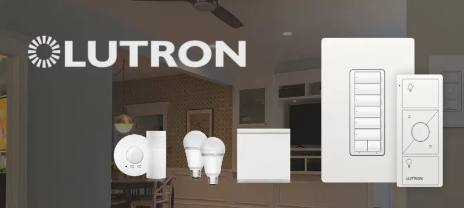
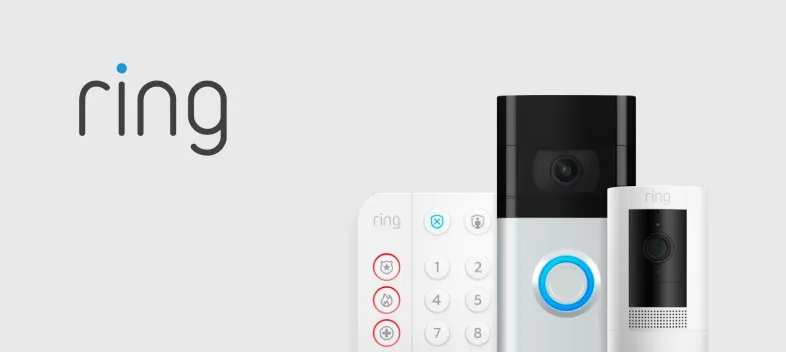
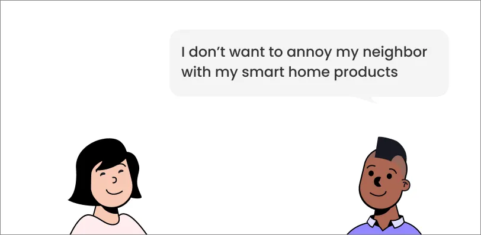
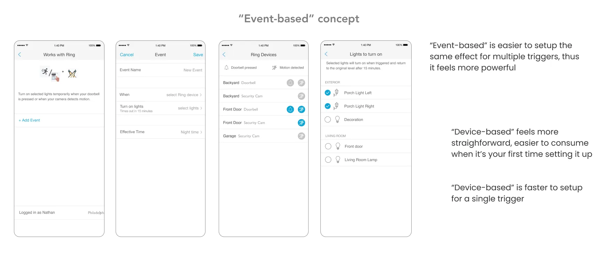
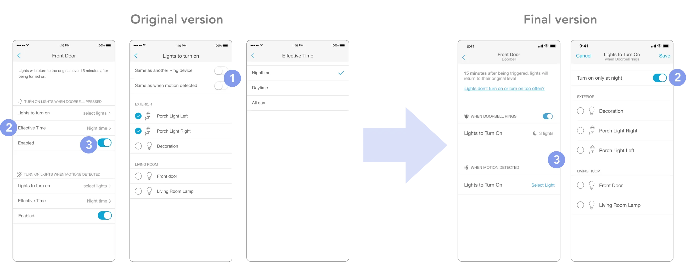
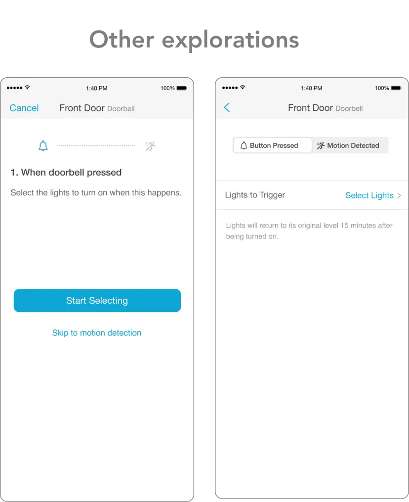

As the UX lead of this feature, I leaded interaction design, user research, and worked closely with a visual designer, a PM, multiple developers, as well as data scientists.
Background

Lutron sells smart lighting systems, which includes lighting controls, sensors, shades, and lighting fixtures.

Ring sells home security systems, which includes video doorbells, security cameras, sensors, and other devices.
How it started ?
This was a long-requested feature
Lutron dealers often also sells Ring, and we hear a lot of requests from them for the integration. In 2020, Lutron and Ring business teams agreed to provide it first with Ring's security cameras and camera doorbells. More specifically to signal Lutron when doorbell was ringed or motion was detected.
The Mission
HMW help users set up and use the integration easily ?
The Process
With a tight schedule, we took a LEAN approach
We only have 8 weeks and time for 1 round of user research in order to meet the Amazon Prime Day release. So we took a LEAN approach, started to develop concepts even before the interviews based on assumptions . And we conducted the user research as a combination of generative learning and validation.
01
Research
Prior to User Interview
We first did some secondary research, and defined hypothetical persona, user journeys, and started to develop concepts for setting up the integration.
pic 1
pic 2
pic 3
pic 4
1. Build empathy by using Ring products (pic1)
We used Ring doorbell and cameras ourselves to build empathy. A key insight gained from this activity is that, motion detection can get overly sensitive under certain situations like a windy weather.
2. Online research (pic2)
We found online that people are already hacking Lutron and Ring together with IFTTT. The most popular function is to activate a Lutron scene with Ring doorbell.
3. Hypothetical persona and user journey(pic3)
We gathered persona information from existing research. Then we developed a user journey based on assumptions, which were captured as things to validation in the user research, along with other questions and unknowns.
4. Develop "pretotype" for setting up the integration(pic4)
Guided by the lean approach, and to get some validation from real users, we developed 2 concepts for the setup experience (task analysis, information architecture design, and wireframing). We chose setup not only because it's the most fundamental function, but also because Lutron App has more precedence to reference for different kinds of setup.
...
Then we conducted 6 online user interviews
Top learnings from users
1. Users want to known what an integration can do before adding it
With Lutron's existing integrations, users can't easily figure out what an integration can do until after they added it. Users want that information upfront because it helps them decide whether to add the integration or not .
2. Users decides what to setup as they do it
Users don't decide everything upfront or have a clear goal in mind while setting up. Instead, it's a continuous process. Users explore what the feature can do and decide what to set up as they do it. This is because combining security products and lighting is a newer concept that most people don't have a lot of idea or expectation of.
3. Security is the top value proposition for this integration
Through showing user drawings of different use cases along with the value propositions, we learned that security is more resonating than convenience and energy saving. We also learned that ideas to relieve annoyance aren't welcomed if it reduces sense of security. For instance, if motion detection gets too sensitive and keeps turning lights on, after user switched lights off, user don't want them to ignore new signals and stay off for any time because they would feel less secure.
4. Social aspect is a key factor
Although security is important, ideas to enhance security aren’t welcomed if it can easily annoys the neighbors / visitors under a “false alarm” scenario. For instance, users don't like the idea of flashing lights when motion detected during sleep hours because that may annoys the neighbors.

02
Define
Based on the insights, we updated the personas:
Concluded design principles:
Design Principles
😌
Easy to understand and take action throughout the journey
🕒
Efficient to set up and troubleshoot
❤️
Intrigue user to try through speaking to user's value
Did another round of brainstorm, prioritization, and planned out the ideas into phases
Updated the ideal user journey
03
Design
1. Discover
User discovers the integration through notification when both Ring App and Lutron App are installed. (Phase II)
User gets an idea of what the integration is and get interested through viewing example use cases, along with key value propositions. User can also get inspired from the examples.
2. Setup
3 steps to setup an automation
1. Select a device
2. Select a trigger
3. Select lights and save
Design decisions 1 Why lights? not scenes?
During initial online research, we found activating a scene is more popular on IFTTT than activating lights. However, through user interviews, we learned the opposite. We decided on lights because on IFTTT it could be people are preferring doorbells over motion detection, rather than scenes over lights.
Design decisions 2 Alternative concept for setup

We also explored an “event-based” concept for setting up the integration, and got user feedback as above. We decided on the “device-based” concept because:
1) Setting up the same effect for multiple triggers is a minority case. We learned that most Ring systems has < 5 devices, plus we are targeting at smaller homes for this feature, meaning less Ring devices.
2) The “event” concept is an additional layer of thinking, especially for some users who are on the older side or aren’t as tech-savy. While the “device-based” concept is more straightforward and easier to understand especially for the first time.
Design decision 3 Simplify the setup flow
The feedback we got on the initial version is: first, It’s a lot of information to consume on screen 1, second, the “same as” options on screen 2 make it complex to understand. So we made some simplification:
1. Removed the “same as” options on screen 2 because we believe is it’s not a common need.
2. Simplify “effective time” options because we learned people hardly need the “daytime”option. And integrate it into “select light” screen because that’s where this information is more important.
3. Apply progressive disclosure principle on the “enable” status. Only show it when it is set up already.

We also explored alternative flows and layouts while seeking ways to make it simpler and easier to consume. But still decided on the layout that containts both triggers because it’s the easiest for users to learn about how it works while setting things up.

After setup: get a clear overview
On both the device page and the homepage, user can see a summary of the setting. On homepage, user can show only devices configured with the current Lutron system to get a clearer overview. This also helps user filter out devices at other homes (e.g., vacation homes, parents' home under the same account etc)
3. Troubleshoot
Identify whether the integration was triggered
Resolve issue by adjusting sensitivity on Ring App OR snooze for a short time.
04
Shipping
Localization and Accessibility spec
In prep for shipping, we co-ordinated with translators for localization work, the visual designers did color contrast check and created large-font spec. I also pioneered the "voice-over" spec in the company guided by the accessibility champion.
Data Tracking and Measurement
I also pioneered a 6-step data tracking process at Lutron UX, which was also adopted and built on in future projects. See key data learnings below:
Interested in more details? Reach out and let's chat!